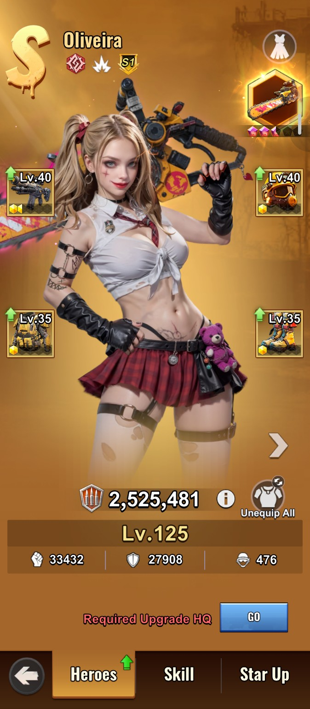
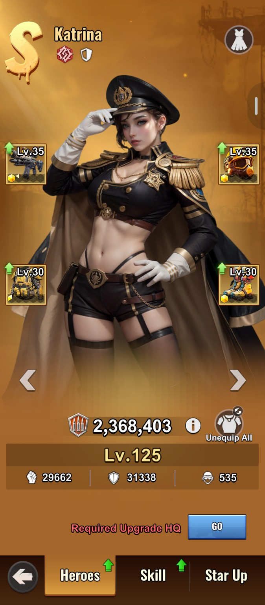
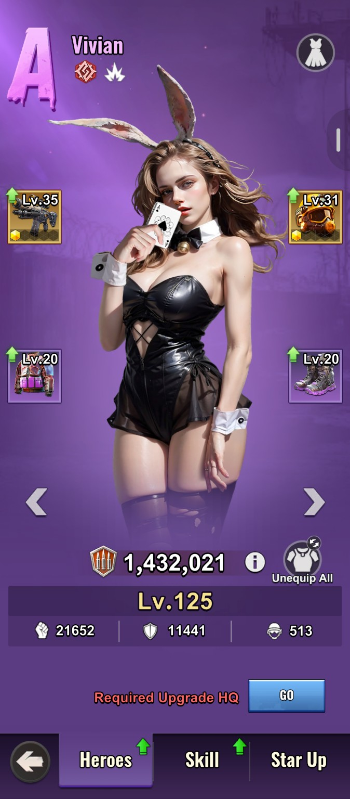
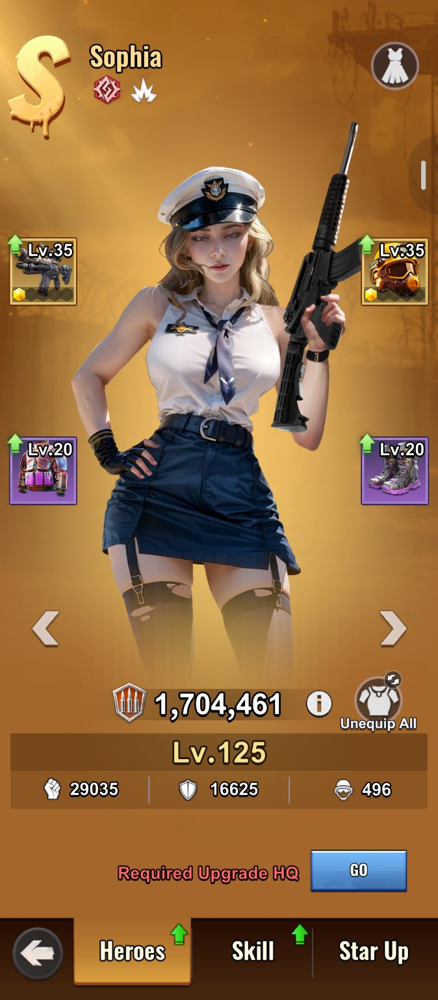
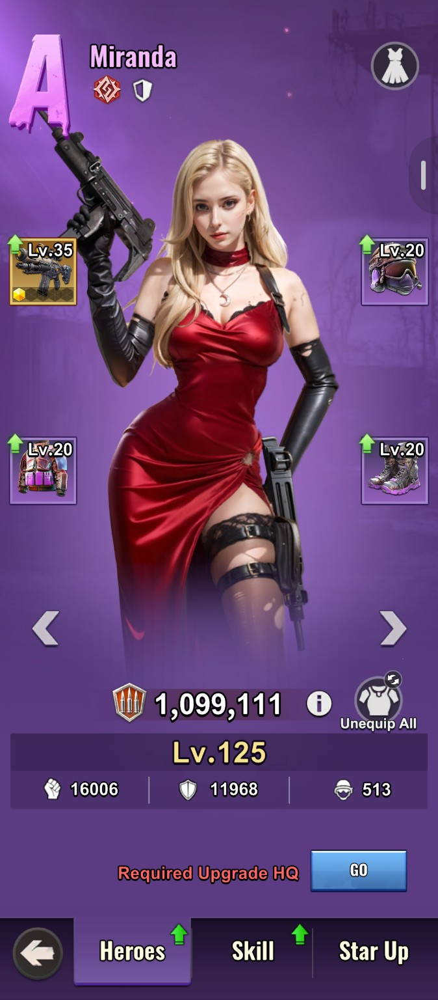
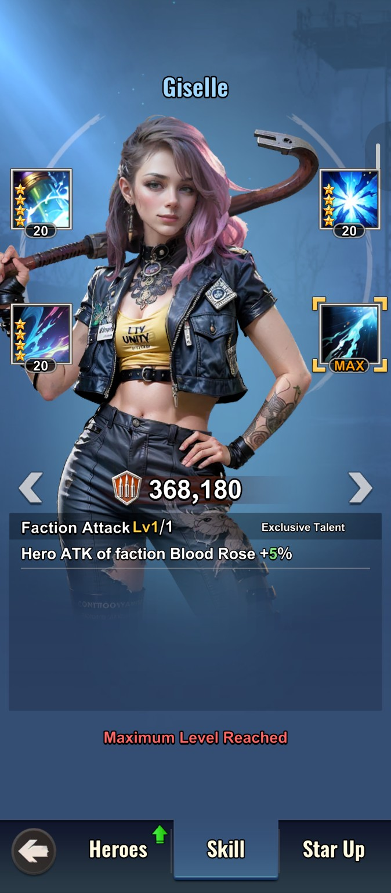
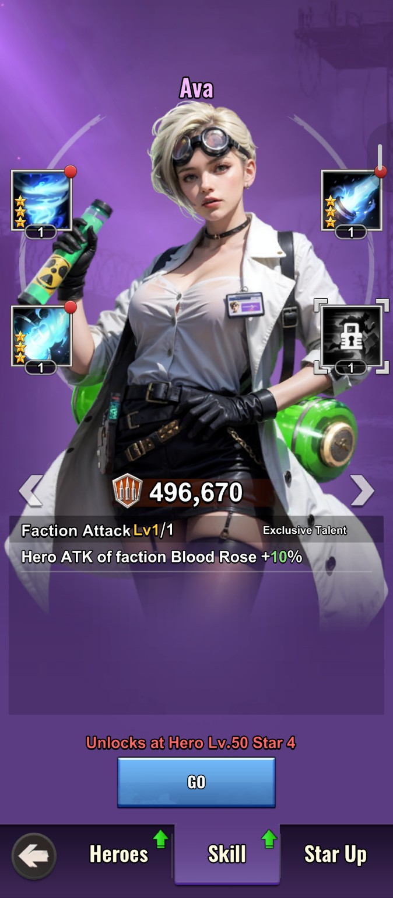
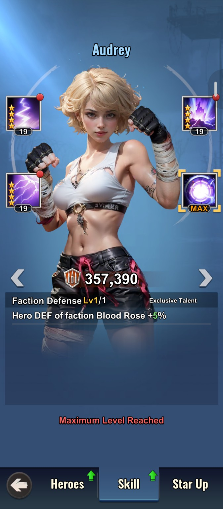
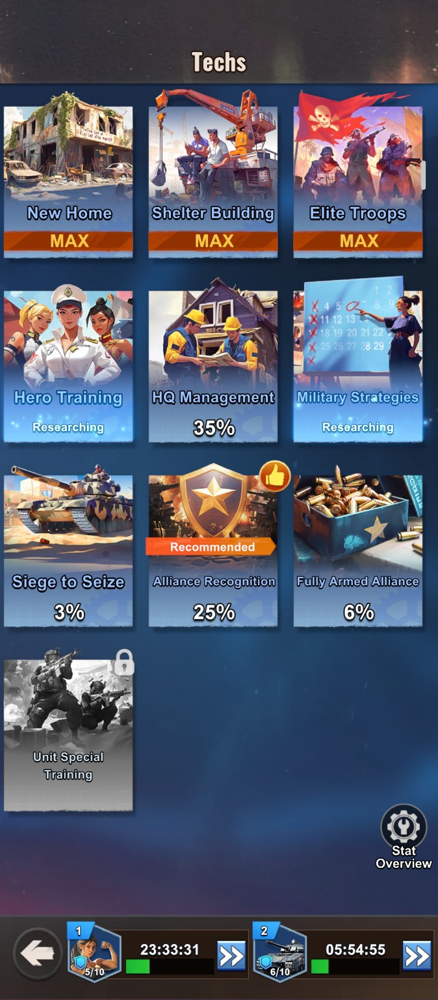

01 / HEROES
Hero Guide
Hero levels, stars, troop tiers and equipment.
Read guide →Practical guides, formation ideas and battle strategies for Last Z: Survivor Shooter. Built by players, for players.
Your quick reference for getting stronger.
Hero levels, stars, troop tiers and equipment.
Read guide →Season 1 research priorities, badge use and combat upgrades.
Read guide →Formation examples and faction synergies.
Planned guide →SVS, Canyon Clash and event tactics.
Planned guide →Four core ways to improve your formation.





Heroes are generally grouped into S-Tier, A-Tier and B-Tier. They also belong to one of three factions: Blood Rose, Dawn Wings and Order Guardian.
A hero's level is limited by your Headquarters level. Each Headquarters level allows another 5 hero levels. Leveling up increases Troop Capacity, Hero Attack and Hero Defense. Use Hero EXP from building upgrades, daily missions and events.
Star upgrades improve core stats. At 4 stars, a hero unlocks their fourth passive skill. Some passive skills provide faction-wide bonuses even when that hero is not in your formation.



S1 heroes such as Olivera, Scarlet and Evelyn have special skills. Check each hero's in-game skill description to confirm the exact conditions and bonuses.
Troop tier affects formation power and the value of your available Troop Capacity. Higher-tier troops generally contribute more CP per troop.
| Troop tier | CP per troop |
|---|---|
| T7 | 2,600 |
| T8 | 3,530 |
Example values supplied for this guide. Verify calculations in-game, because the final power increase depends on the actual number of troops and other modifiers.
Gear comes in Green, Blue, Purple and Yellow tiers. Yellow gear offers the highest stats in this guide's tier system. Gear types are Weapon, Helmet, Boots and Armor.
| Yellow gear type | Main bonuses |
|---|---|
| Weapon | Hero Attack and Hero Attack % |
| Helmet | Hero Attack, Hero Defense and Hero Attack % |
| Boots | Hero Attack, Hero Defense and Hero Defense % |
| Armor | Hero Defense and Hero Defense % |
Yellow gear can be promoted after level 20 using Energy Cores. Its stats improve with each promotion; the first promotion is an important milestone.
Vivian + Miranda + Sophia + Olivera + Katrina
For players who prefer to spend less, focusing resources on heroes that are easier to star up can be an efficient way to strengthen your first formation. The original recommendation highlights Blood Rose heroes such as Vivian, Miranda and Katrina.
Recommended research priorities to save badges and build combat power efficiently.

Technology research is divided into two main categories:
These two research types serve different purposes. Knowing which technologies to prioritize, when to invest in them, and in what order to complete them is essential for saving both time and badges.
When you start the game, the system guides you toward completing the New Home research. This is the starting point of the functional research tree.
Functional research provides benefits such as construction speed, research speed, resource production, and resource efficiency. These technologies do not directly increase your combat power. Instead, they help you progress faster and make better use of your resources.
Completing one stage of the research tree unlocks the next. For example, completing New Home unlocks Shelter Building, followed by Headquarters Management, and so on.
When you have limited badges, investing in functional research can significantly reduce construction and research times. This allows you to progress faster and save your badges for technologies that directly increase your combat power.
Now, let's get to the part everyone is most interested in: which technologies should we research, and in what order, to increase our combat power?
It's completely understandable if the research trees seem confusing at first. However, once you understand how they work, making the right decisions becomes much easier.
In our previous guide, we discussed each hero's troop capacity and explained the different ways to increase it.
The key principle to understand here is this: The greater your troop capacity, the more value you can get from combat bonuses that apply to your troops.
Therefore, when choosing combat research, you should consider not only the percentage of each bonus but also how many troops benefit from it.
Our first priority in combat research is the Hero Training tree.
The most important research in this tree is Cockpit, which increases each hero's troop capacity by +20.
Cockpit allows you to carry more troops, helping you get more value from subsequent combat research.
After Hero Training, our next priority is the Elite Troops research tree.
The first two key technologies in this tree are Firepower Upgrade and Armor Upgrade. These are fundamental research options for improving your troops' combat performance.
They increase the combat power and defense of the troops carried by your tank, contributing directly to your overall battlefield effectiveness.
Other technologies in the Elite Troops tree that directly increase troop attack power are also important. These bonuses improve the performance of your deployed troops and contribute to your overall combat strength.
After Elite Troops, our next destination is Military Strategies.
Military Strategies is one of the research trees that provides significant combat power. The reason is simple: the troop combat power and troop defense bonuses found in Elite Troops appear twice each in this tree as well.
These technologies further strengthen your existing combat bonuses and improve your troops' overall performance.
Once you complete approximately 45% of the Military Strategies tree, the next research tree becomes available. Therefore, you do not need to finish the entire tree during the early stages of the game.
This approach helps you progress more efficiently, especially when badges are limited.
After completing the priority research in Military Strategies, we move on to Siege and Conquest.
The main goal of this tree is to unlock attack bonuses for different troop types. However, combat bonuses are not the only things worth researching here. This tree also contains two useful technologies that improve your everyday gameplay:
Our next research tree is Peace Shield.
Compared with some of the other research trees, Peace Shield requires relatively fewer badges and offers several valuable benefits.
Like the previous trees, Peace Shield includes technologies that increase troop combat power and defense. It also contains an important combat technology that reduces the proportion of troops killed during attacks on your Headquarters.
This can be particularly useful during intense battles, as it helps you manage troop losses more effectively.
Our next research tree is Alliance Weapons.
However, there is one important detail you need to know before investing in this tree:
The bonuses provided by Alliance Weapons are active only on Saturdays, during the battle day.
This tree includes a variety of technologies, ranging from increased hospital capacity to bonuses that increase the damage dealt to cities.
Although these bonuses are useful, you do not need to rush to complete the entire tree. You can gradually invest in it as you accumulate badges and finish your higher-priority research.
Many players who reach the Alliance Weapons tree are already preparing for Headquarters Level 30 and, consequently, T10 troops.
Considering that T10 requires approximately 1.5 million badges, saving badges at this stage is extremely important.
Instead of completing every technology in Alliance Weapons, it is more efficient to invest only in the features that you actually need and that contribute to your gameplay strategy.
Avoiding unnecessary research will help you reach your T10 goal faster while making better use of your time and badges.
Do not neglect functional research. Although it does not directly increase combat power, it accelerates your overall progression and helps you unlock other technologies more efficiently.
Throughout Season 1, our goal should be to invest our badges strategically rather than spending them randomly.
First, increase your troop capacity. Then focus on research that improves troop combat power and defense. As you progress, make your decisions based on your badge reserves and your long-term T10 goal.
Remember: The goal is not to be the first player to complete every research tree. The goal is to become stronger as efficiently as possible by investing your badges in the right technologies.
That concludes our Season 1 Technology Research Guide!
Our next guide will cover Buildings and Their Features.
Add new pages here as the alliance handbook grows. Keep this same website link and update the content over time.